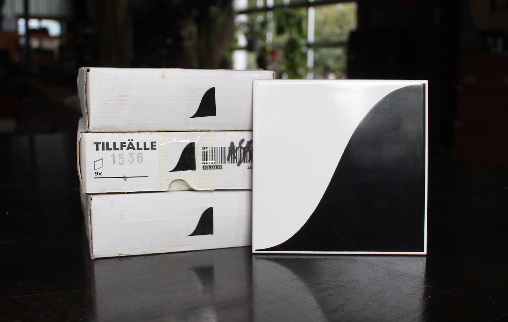
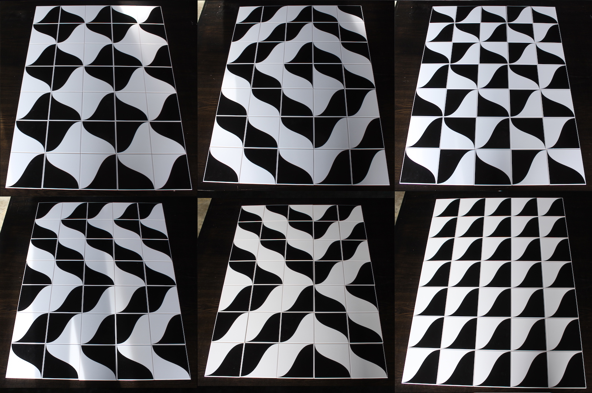

Tiles is an interactive browser-based visualization made with p5.js. Three distinct modes explore the striking visual effects of a grid of rotating symmetrical tiles. A variety of tools allow the user to shape the animation in exciting ways.
Each mode contains a few presets that demonstrate some of the possibilities. I recommend clicking through them!
The code (vanilla JS/HTML/CSS) is available on Github.
While browsing the clearance section at Ikea, I came across a rack of ceramic tiles painted with various shapes. One design in particular caught my eye – a symmetrical shape that resembled a sine wave. It looked like it could make some fun patterns, so I bought a few boxes.
I laid the tiles out and started rearranging them, and soon discovered that there were indeed many exciting configurations. But then the question became "How do I choose just one to permanently affix them in?"
To avoid this problem, I envisioned a large wall of tiles with each tile able to rotate independently on a separate motor, allowing the wall to continuously rearrange itself into different patterns.
I would still like to build this project, but in the interim I settled for the next best thing: simulating it in software. This is the pattern mode in tiles, described below.
Once I got it working, I was mesmerized by the effect, so I began adding modes and features to explore the concept further.
While setting up the simulation, I wondered "What would it look like if each tile was spinning faster than the one before it?" Turned out to be pretty cool, and thus the spin mode was born. The many different ratios produce an evolving flow with glimpses of structure forming and dissipating amid the chaos.
I was intrigued by the complexity of motion emerging from a simple deterministic rule. To simplify even further, the curve parameter can be turned all the way down, reducing the composition to only straight lines while retaining the fluidity.
The first tile does not move at all. I later learned that Arthur Ganson had (among others) explored this concept beautifully with Machine With Concrete.
In pattern mode, the grid transitions between a set of defined patterns. A pattern is a function that assigns one of four directions to each tile in the grid. Most of them are relatively simple algebraic expressions (they can be viewed here). It's a fun logic puzzle trying to convert a pattern in your head or on the table into function. It's also fun to just test out different formulas and tweaks and see what happens.
Transitions consist of simply rotating the tiles from one state to the next. Every pair of patterns has a unique transition between them - sometimes many tiles need to be rotated significantly and sometimes very little change is needed. Transition functions tell each tile when during the transition to start rotating, creating different wipe effects. Multiple transitions can be in effect simultaneously.
The tiles rotate clockwise by default. This creates a rolling effect that makes it easy to follow the transition. When the short button is enabled, tiles that would rotate 270° will instead rotate 90° the other direction. This creates more of an organic morphing effect.
As of December 2020 there are 19 patterns (chosen in a randomized sequence) and 8 transitions. Countless more possibilities exist, adding pre-calculated "bitmaps" and ultimately "videos" would be a logical next step.
Orbit mode was discovered entirely by accident, due to a bug in the tile rotation code. When first entering this mode, it shows what I saw when it first happened. Expecting to see the familiar grid, I was instead greeted by a curled worm-like shape unfolding ominously as celestial objects zoomed by on wild orbits. Completely bewildered, I burst into laughter.
As the worm flattens out, the grid does materialize briefly before spinning off into orbit again, providing a clue as to what's going on. In many drawing contexts, in order to rotate an object, you move the "camera" to the center of the object, rotate the camera, draw the object, and then return the camera to its starting position before drawing the next object. I had forgotten that last step, which resulted in the camera movements compounding on each other. With a grid of objects gradually increasing in rotation, this creates spiral shapes that fold in on themselves in a fractal-like way.
The bug was fixed, but the mode was kept. Digging deeper, I learned how to navigate it, developed tools to manipulate it, and discovered more interesting phenomena (some are captured in the mode's presets). At times it felt like observing creatures under a microscope, trying to learn about their world.